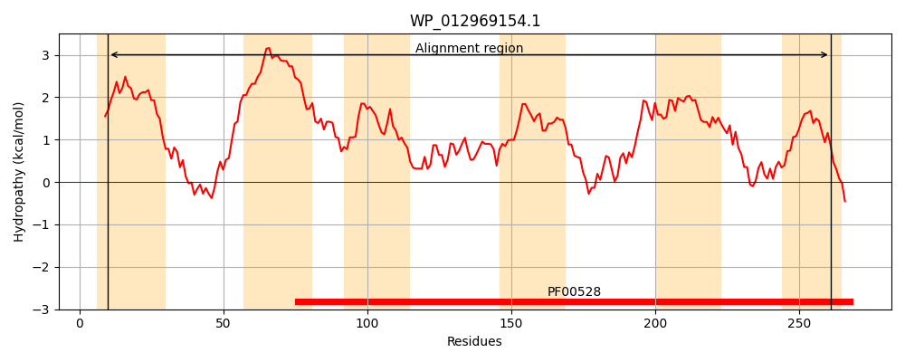
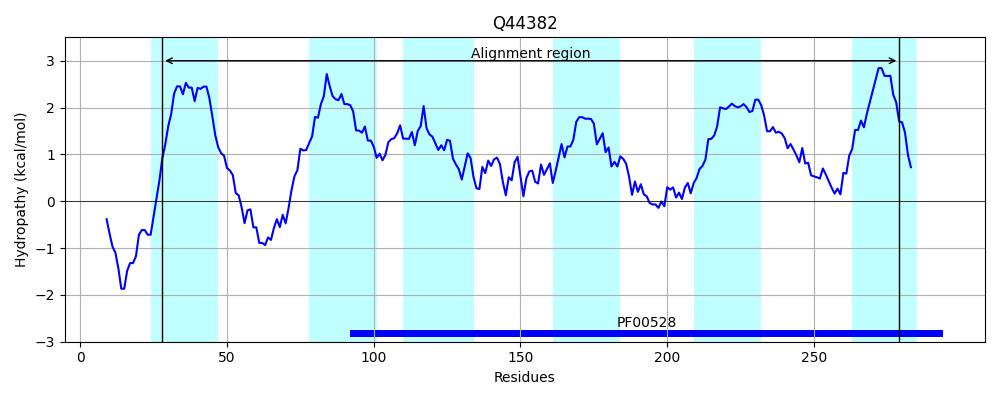
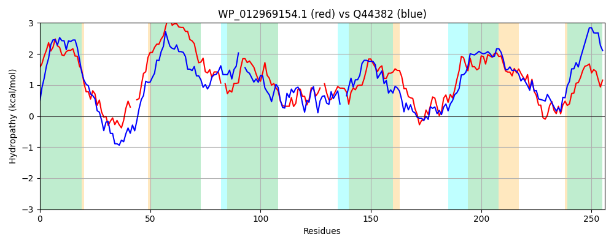

Hit Accession: Q44382
Hit TCID: 3.A.1.11.3
Hit Description: gnl|BL_ORD_ID|13600 gnl|TC-DB|Q44382|3.A.1.11.3 INNER MEMBRANE PROTEIN MOTC - Agrobacterium tumefaciens.
Mach Len: 256
e:0.000000
Query TMS Count : 6
Hit TMS Count: 6
TMS-Overlap Score: 6.350000
Predicted Substrates:CHEBI:80662;mannopine
BLAST Alignment:
Score: 213 , Bit scores: 86 bits, E-value: 6.9e-20, Alignment length: 256, Percentage identity: 24
Query: 10 LVAPAALMIAILFLYPLGFSLVSAFTAPGQPFTLDHFRKVYA--LYASDVLFSLIIVLVSVALLALIAITLSAVIALSPCRPV-VRLLGFLYRLPLFIPFIVVAQMMRTFLAKNGLMNNALVAADLVT-PLETLSWLGWKGIVITFVWKQLAFATLLICGAMAALESSQILAARNLGASRPRILFDIMLPQVLPTIGVALVLSTVTMMSVLSVPLMIGVGTPTMLTVDMAFRVNSYGDYAVANALGMVSLAICGAL 261
L P +++ I + PLG +F F+ +++ +++ +Y + ++ +++ A++ I L+ +++ P + + +LG L +PL+ P +V L G++NN L+ ++ PL + L G +I V L F L + G+M A++ + + AA NLGA R +D+ P LP + ++ V + P ++G G M+ + + V Y + A+ALG+V + + L
Sbjct: 28 LTVPGMIVLVIALVLPLGVMTYLSFIGEDGTFSFENYTRIWESDIYGRIFGVTFLVAVLTTAIVVFIGYPLAYLLSQLPAKIAGIAMLGVL--MPLWTPVLVRTYAWLALLQGQGIINNTLIHLGAISQPLPLANNL--TGTLIGMVQVMLPFLILPLYGSMKAVDPNLMCAASNLGARPSRAFWDVFFPLSLPGLLSGALMVFVLCLGFYVTPAVLGGGRVIMVAMRIDANVRIYSSWGAASALGVVLIVVTAVL 279 | Protein Hydropathy Plots: |
|---|
|  |  |
Pairwise Alignment-Hydropathy Plot:
|
|---|
|  |